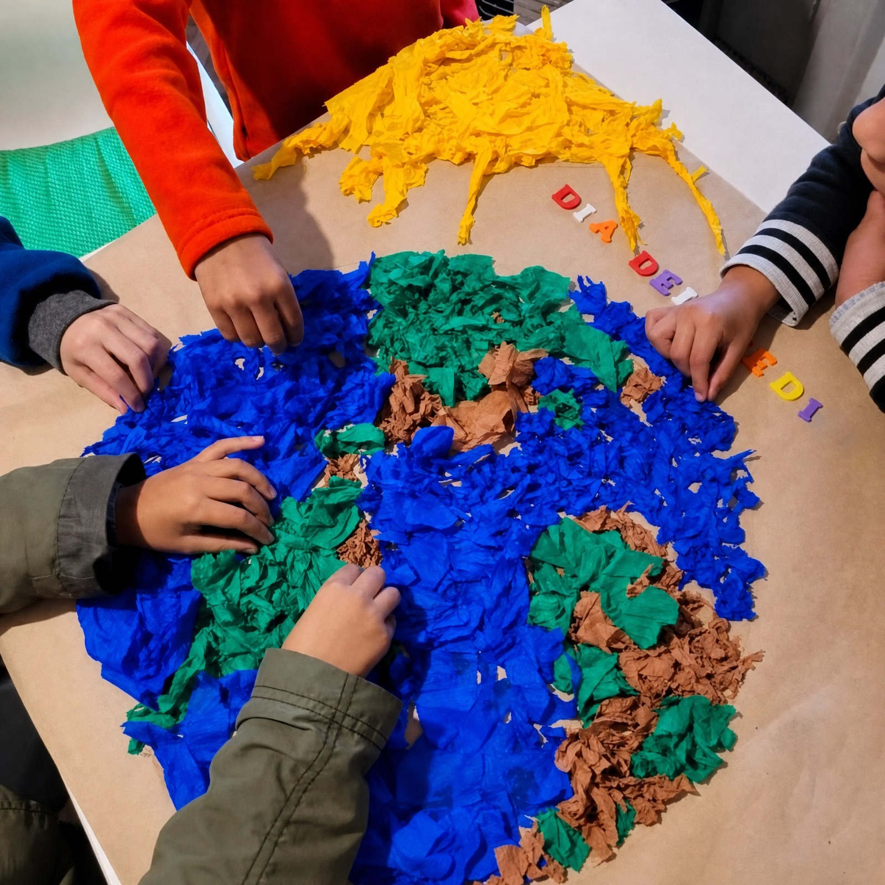
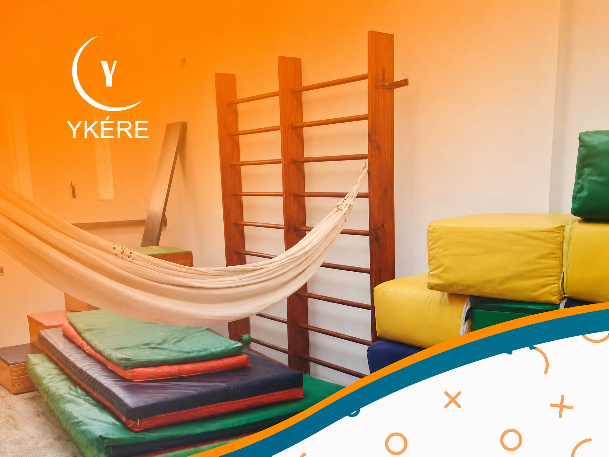
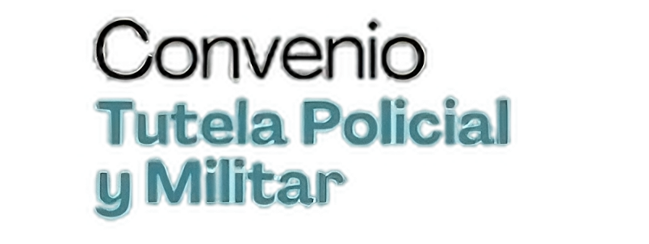

Psicopedagogía
Acompañamos procesos de aprendizaje, estrategias de estudio y dificultades escolares.
Trabajamos desde una mirada interdisciplinaria, cercana y humana, creando espacios de atención pensados para cada etapa del desarrollo.

Ykere es un centro interdisciplinario orientado al acompañamiento de niños, adolescentes y familias. Integramos diferentes áreas profesionales para construir una mirada amplia sobre cada proceso.
Nuestro trabajo busca generar espacios de confianza, escucha y acompañamiento, respetando los tiempos y las necesidades de cada persona.
Creemos en el trabajo conjunto entre profesionales, familias e instituciones para favorecer el bienestar, el aprendizaje, la comunicación y el desarrollo.


Distintas disciplinas trabajando de forma coordinada.
Escuchamos y acompañamos cada proceso con respeto.
Ambientes pensados para favorecer el desarrollo y el bienestar.
Un equipo de distintas disciplinas que acompaña cada proceso de forma cercana, personalizada y coordinada.
Acompañamos procesos de aprendizaje, estrategias de estudio y dificultades escolares.
Trabajamos el desarrollo corporal, emocional, vincular y motor en distintas etapas.
Brindamos espacios de acompañamiento emocional para niños, adolescentes y familias.
Evaluación y acompañamiento en lenguaje, comunicación, habla y áreas relacionadas.
Valoración y seguimiento especializado desde una mirada integral del desarrollo.
Favorecemos autonomía, participación y desempeño en las actividades de la vida cotidiana.
Contamos con profesionales de distintas áreas que trabajan de forma cercana, coordinada y comprometida con cada niño, adolescente y familia. Nuestro espacio también forma parte de la experiencia de acompañamiento.
Breve descripción de la profesional, su experiencia, formación y forma de acompañar los procesos.
Breve descripción de la profesional, su experiencia, formación y forma de acompañar los procesos.
Breve descripción del profesional y su trabajo dentro del centro.
Breve descripción del profesional y su trabajo dentro del centro.
Breve descripción del profesional y su trabajo dentro del centro.
Breve descripción del profesional y su trabajo dentro del centro.
Consultá con nuestro equipo las condiciones y disponibilidad de cada modalidad.



Podés comunicarte con nosotros o acercarte al centro.
Elegí el medio que te resulte más cómodo y nos ponemos en contacto contigo.